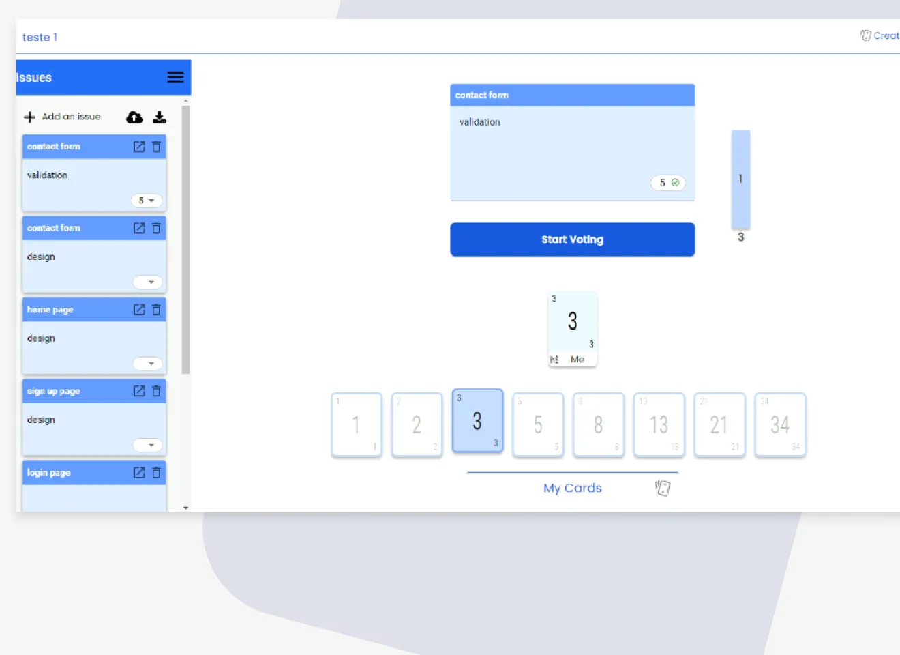
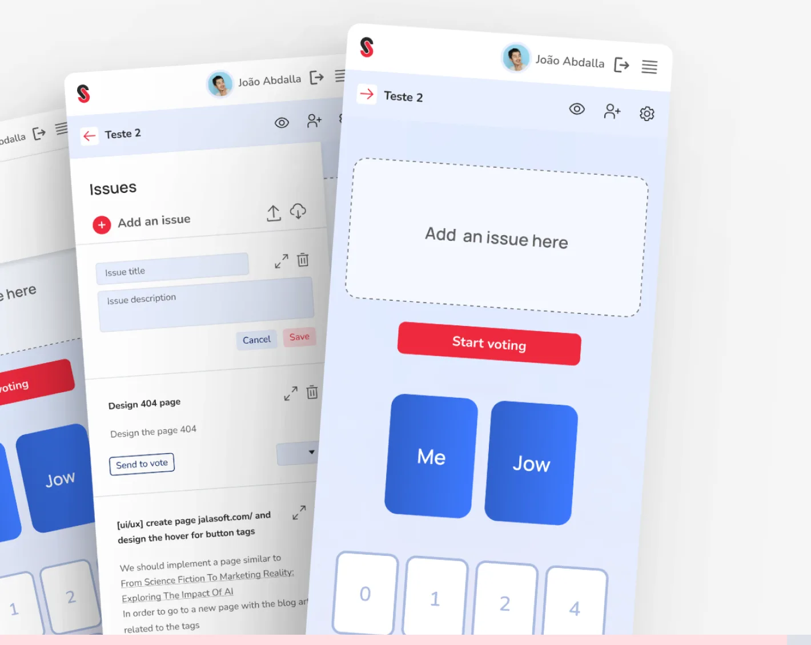
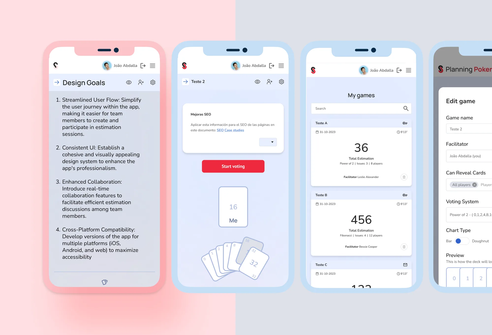
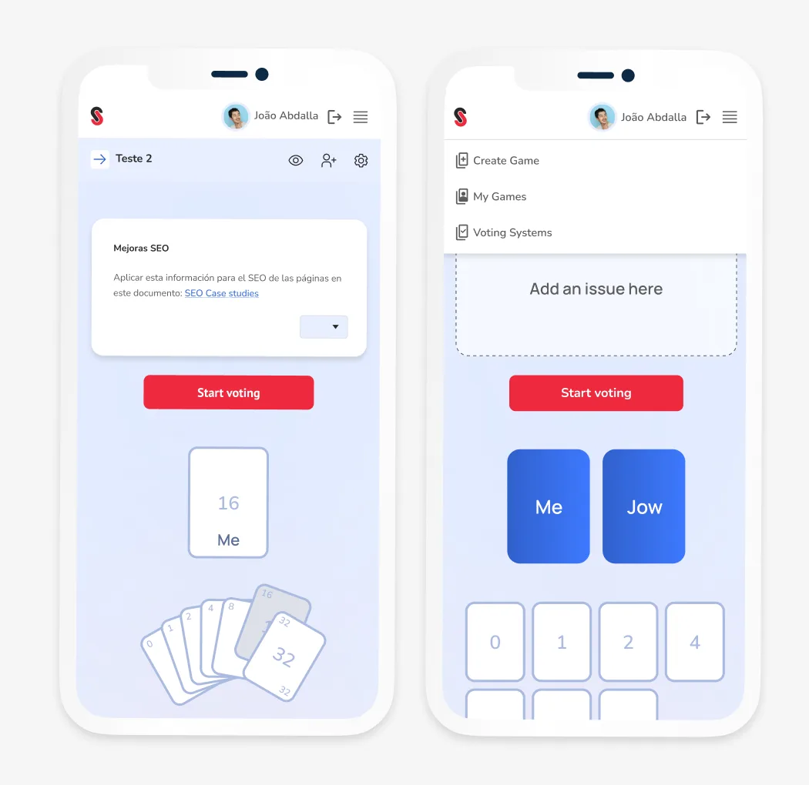
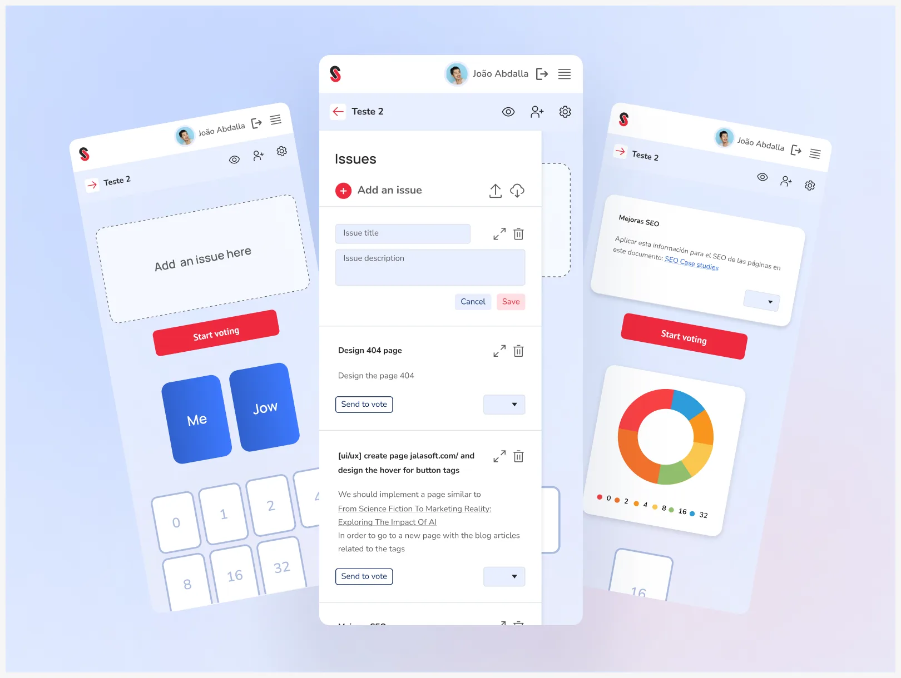
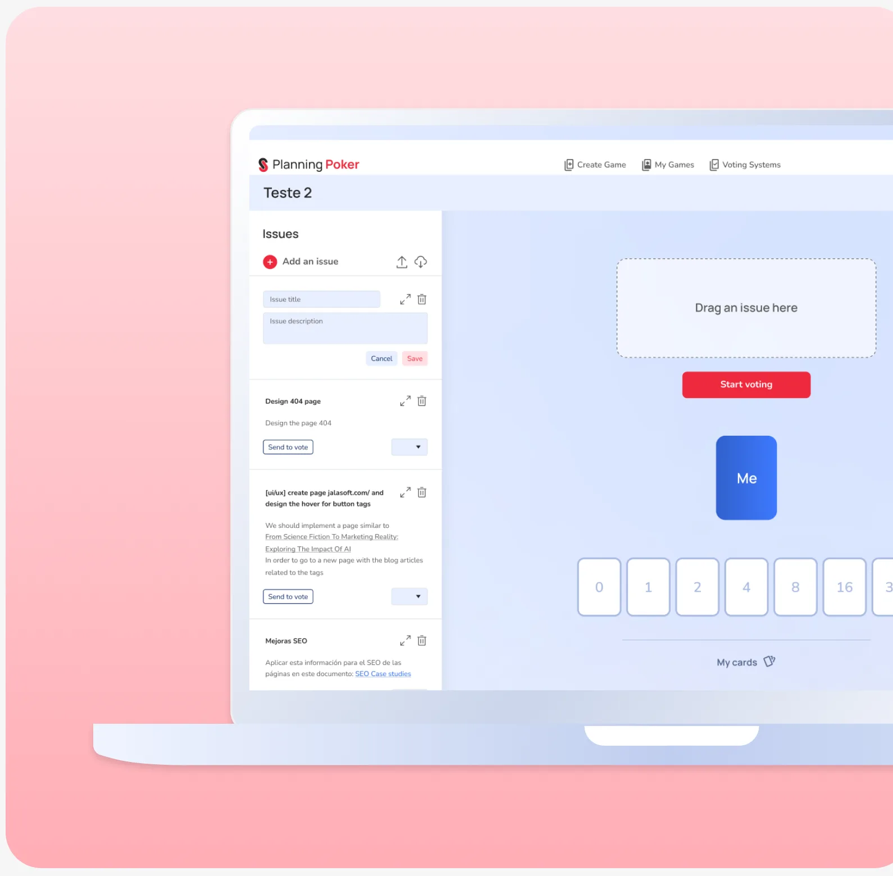
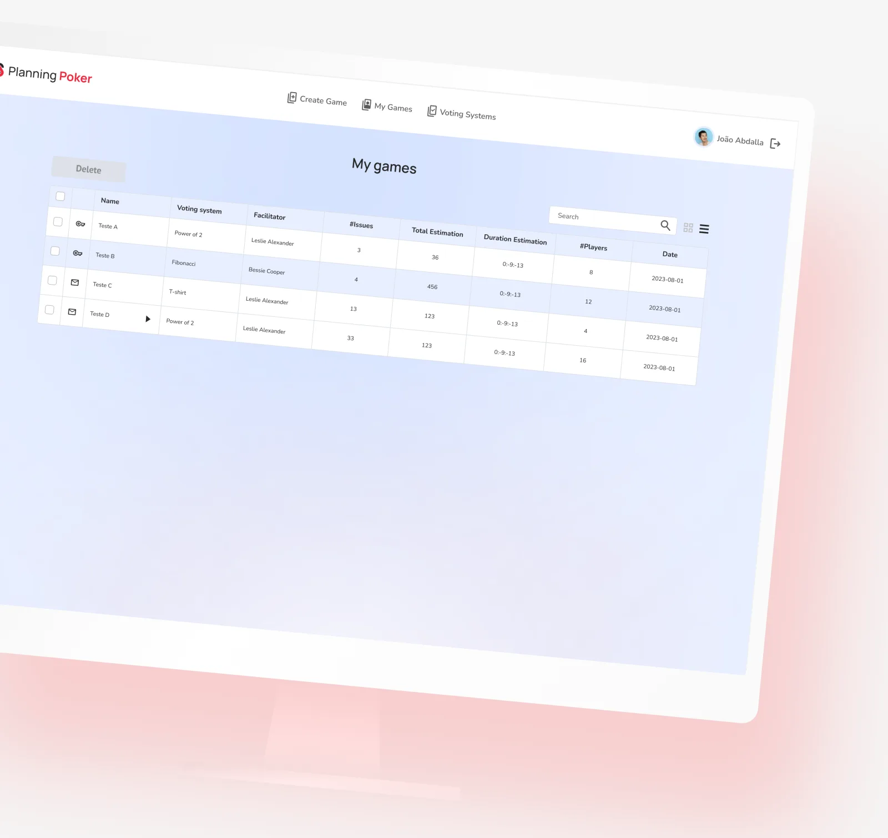
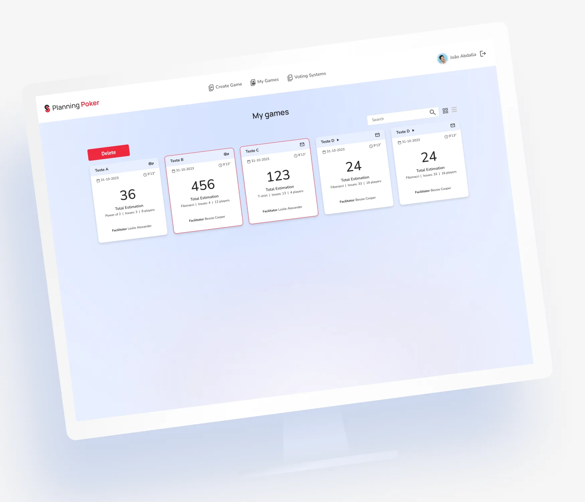

Planning Poker
Enhancing Agile Estimation
A redesign of a Planning Poker application, with the goal of improving the experience and interface for Agile estimating: more intuitive, more efficient and easier to use.

Hard to estimate work during Sprint Planning
The existing Planning Poker app had several usability issues, making it cumbersome for Agile teams to efficiently estimate their work during Sprint Planning meetings.
Complex user flow
The app had a convoluted user flow, causing confusion among users, especially new team members.
Inconsistent design
The app's design lacked consistency, leading to a disjointed and unprofessional appearance.
Lack of collaboration
The app did not facilitate efficient collaboration among team members during estimation sessions.

Understanding how teams estimate
User interviews
We conducted interviews with Agile team members to understand their pain points and expectations from a Planning Poker app. Key insights included the need for a more intuitive interface, smoother collaboration features, and cross-platform availability.
Competitive analysis
We analyzed several Planning Poker apps available in the market to identify best practices and areas for improvement. This analysis helped in defining benchmarks for the redesign.
Usability testing
We performed usability testing with the existing app, identifying specific pain points and usability issues faced by users. This data was crucial in informing our redesign decisions.

Four goals for the redesign
Streamlined user flow
Simplify the user journey within the app, making it easier for team members to create and participate in estimation sessions.
Consistent UI
Establish a cohesive and visually appealing design system to enhance the app's professionalism.
Enhanced collaboration
Introduce real-time collaboration features to facilitate efficient estimation discussions among team members.
Cross-platform compatibility
Develop versions of the app for multiple platforms (iOS, Android and web) to maximize accessibility.


Feedback in every stage
We conducted usability tests with team members at various stages of development, incorporating their feedback into the design and functionality. This iterative approach allowed us to address issues promptly and refine the user experience.

Overwhelmingly positive feedback from Agile teams
Improved usability
Users reported that the app's simplified user flow made estimation sessions more efficient and less confusing.
Enhanced collaboration
The addition of real-time chat and discussion boards improved communication and fostered better consensus during estimation.
Professional appearance
The cohesive UI design contributed to a more polished and trustworthy app, boosting user confidence.
Cross-platform availability
The availability of the app on multiple platforms increased its accessibility and usability for remote teams.

The redesign of the Planning Poker app successfully addressed usability issues and improved the user experience for Agile teams. By focusing on streamlining the user flow, ensuring consistency in design, enhancing collaboration features, and expanding platform compatibility, we created a valuable tool that facilitates more efficient Agile estimation.
The lessons learned underscore the importance of user-centered design in creating software tools that truly meet the needs of their users. The redesigned app now stands as a testament to the positive impact of thoughtful UX/UI design in the Agile development process.

We plan to continue monitoring user feedback and making iterative improvements to further enhance the app's functionality and user experience. Additionally, we will explore opportunities for integrating the app with popular Agile project management tools to provide a seamless experience for Agile teams.
